Serpentine (snake) plots for survey responses, experience sampling (EMA/ESM) data, and activity timelines using base R graphics. Zero external dependencies.
Installation
# From GitHub.
devtools::install_github("mohsaqr/snakeplot")
# Once on CRAN
install.packages("snakeplot")Overview
Snake plots arrange data as horizontal bands in a serpentine layout — each row reverses direction and connects to the next through a U-turn arc. The package provides six plotting functions and 10 built-in color palettes:
| Function | Purpose |
|---|---|
survey_snake() |
Survey/EMA responses with ticks, bars, correlations, faceting |
activity_snake() |
Daily activity timelines with event blocks or rug ticks |
sequence_snake() |
State sequence as colored blocks flowing through serpentine layout |
timeline_snake() |
Career/life-event timeline from a 3-column data.frame (role, start, end) |
survey_sequence() |
Stacked 100% horizontal bars in serpentine layout |
sequential_dist() |
Sequential (monochrome) variant of survey_sequence()
|
line_snake() |
Continuous intensity line plot (experimental) |
facet_snake() |
Generic multi-panel wrapper for any snake function |
Bundled datasets
Three datasets from Neubauer & Schmiedek (2024) are included:
| Dataset | Rows | Description |
|---|---|---|
ema_emotions |
280 | Person-level means for 10 emotions (1-7 scale) |
student_survey |
280 | 34 items across 4 constructs, prefixed for faceting |
ema_beeps |
11 474 | Beep-level timestamps + anger/happiness ratings (14 days) |
Examples
library(snakeplot)
labs7 <- c("1" = "Not at all", "2" = "Slightly", "3" = "Somewhat",
"4" = "Moderate", "5" = "Quite", "6" = "Very",
"7" = "Extremely")
survey_snake() — daily value distribution ticks
survey_snake(ema_beeps, var = "angry", day = "day",
colors = snake_palettes$ocean, level_labels = labs7,
title = "Anger — 14 days, value distribution")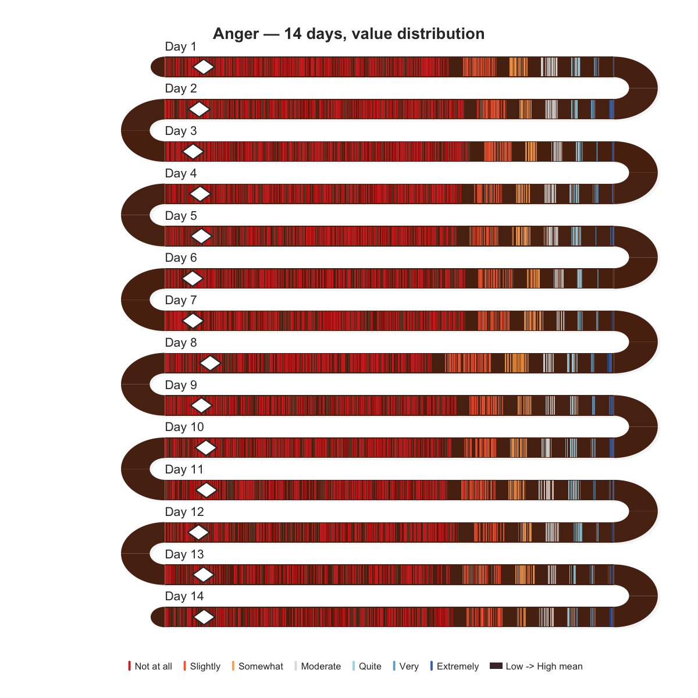
survey_snake() — correlation arcs
survey_snake(ema_emotions, tick_shape = "line",
arc_fill = "correlation", sort_by = "mean",
colors = snake_palettes$ocean, level_labels = labs7,
title = "Emotions — correlations at U-turns")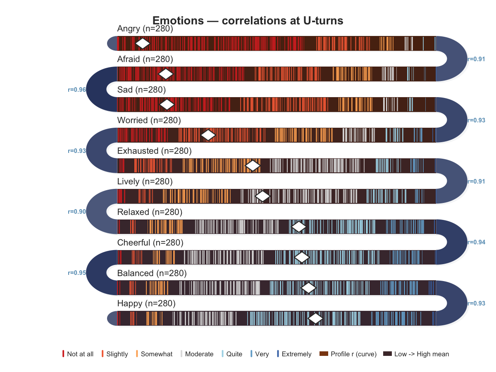
survey_snake() — dot plot with dark bands
survey_snake(ema_emotions, tick_shape = "dot", sort_by = "mean",
colors = snake_palettes$ocean, level_labels = labs7,
band_palette = c("#1a1228", "#1a2a42"),
title = "Emotions — dots on dark bands")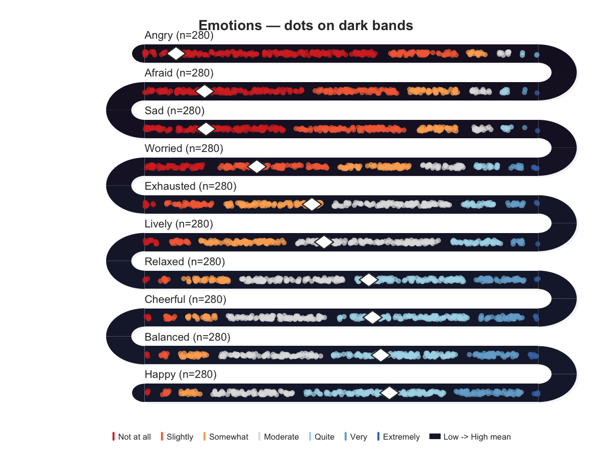
survey_snake() — faceted multi-construct
survey_snake(student_survey, facet = TRUE, facet_ncol = 2L,
tick_shape = "bar", sort_by = "mean",
colors = snake_palettes$ocean, level_labels = labs7)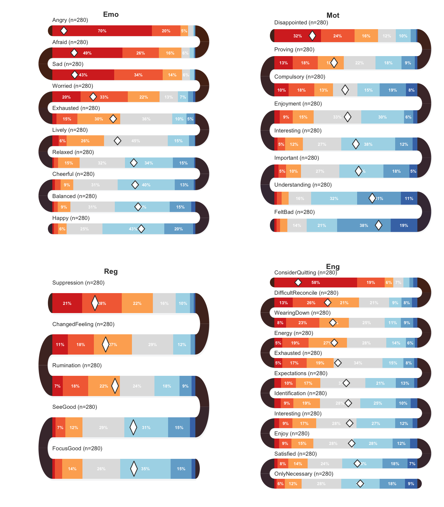
survey_snake() — daily distribution bars
survey_snake(ema_beeps, var = "happy", day = "day",
tick_shape = "bar", bar_reverse = TRUE,
colors = snake_palettes$ocean, level_labels = labs7,
title = "Happiness — 14 days, distribution bars")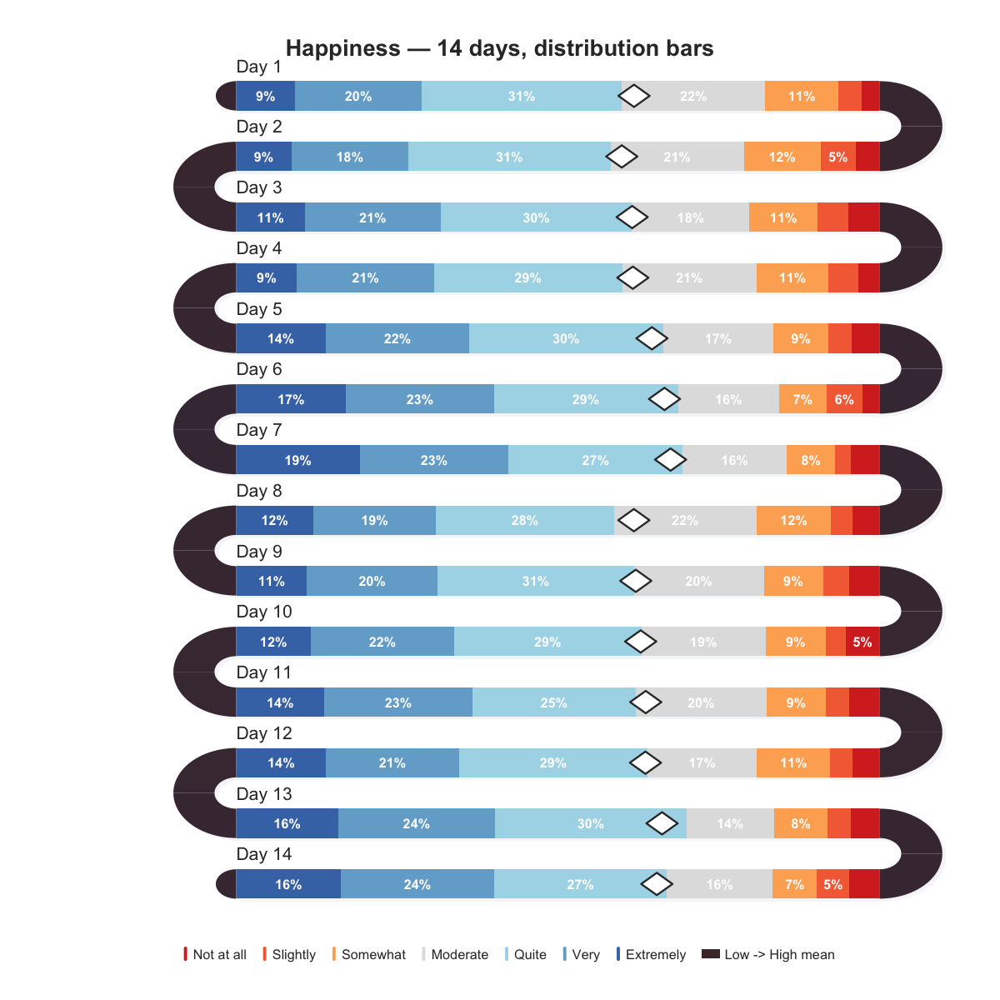
activity_snake() — rug ticks
set.seed(42)
days <- c("Mon", "Tue", "Wed", "Thu", "Fri", "Sat", "Sun")
d <- data.frame(
day = rep(days, each = 40),
start = round(runif(280, 360, 1400)),
duration = 0
)
activity_snake(d)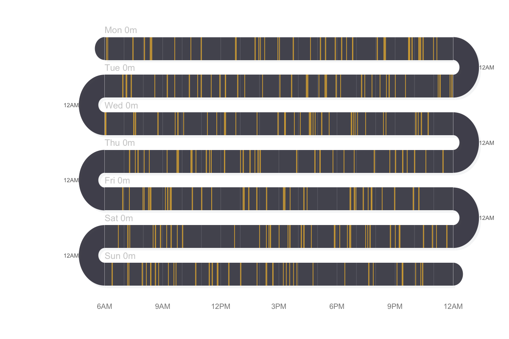
activity_snake() — duration blocks
d2 <- data.frame(
day = rep(days, each = 8),
start = round(runif(56, 360, 1200)),
duration = round(runif(56, 15, 120))
)
activity_snake(d2, event_color = "#e09480", band_color = "#3d2518")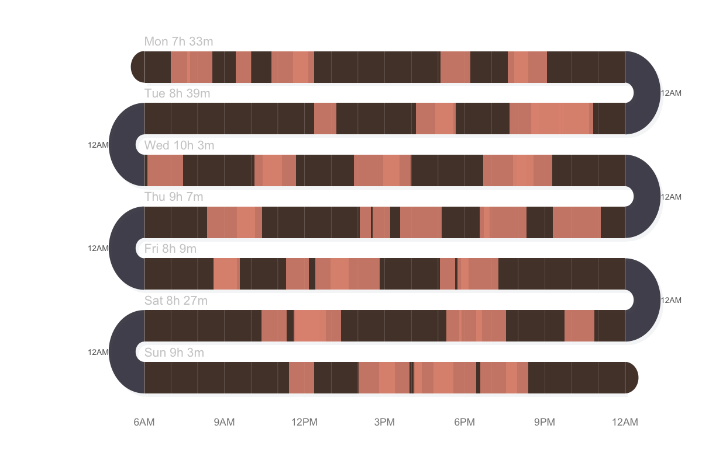
sequence_snake() — state sequence
set.seed(42)
verbs <- c("Read", "Write", "Discuss", "Listen",
"Search", "Plan", "Code", "Review")
seq75 <- character(0)
while (length(seq75) < 75) {
seq75 <- c(seq75, rep(sample(verbs, 1), sample(1:4, 1)))
}
seq75 <- seq75[seq_len(75)]
sequence_snake(seq75, title = "75-step learning sequence")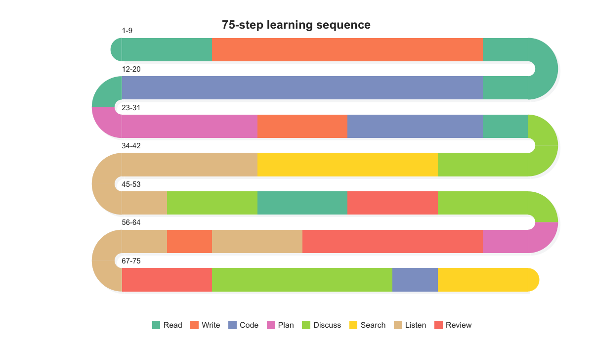
timeline_snake() — career/event timeline
career <- data.frame(
role = c("Intern", "Junior Dev", "Mid Dev",
"Senior Dev", "Tech Lead", "Architect"),
start = c("2015-01", "2015-07", "2017-01",
"2019-07", "2022-07", "2024-01"),
end = c("2015-06", "2016-12", "2019-06",
"2022-06", "2023-12", "2024-12")
)
timeline_snake(career,
title = "Software Engineer — Career Path (2015-2024)")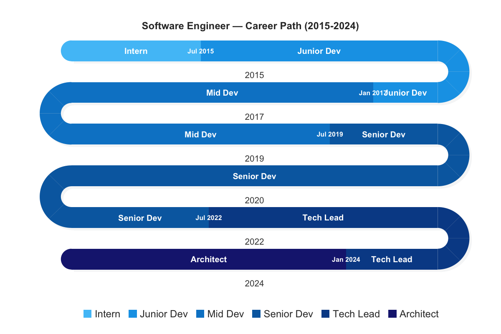
survey_sequence() — stacked bars
survey_sequence(ema_emotions, colors = snake_palettes$ocean)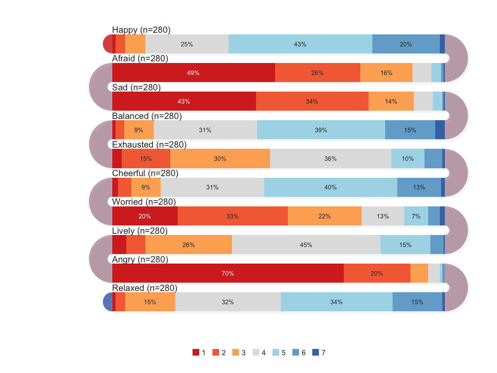
line_snake() — continuous intensity
set.seed(42)
hours <- seq(0, 1440, by = 10)
d_line <- data.frame(
day = rep(c("Mon", "Tue", "Wed", "Thu", "Fri"), each = length(hours)),
time = rep(hours, 5),
value = sin(rep(hours, 5) / 1440 * 4 * pi) * 50 + 50 +
rnorm(5 * length(hours), 0, 8)
)
line_snake(d_line, fill_color = "#e74c3c")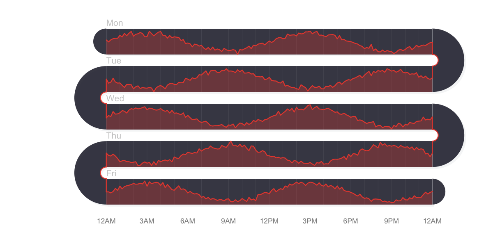
Built-in palettes
10 palettes ship with the package — 5 diverging, 5 sequential:
names(snake_palettes)
#> "classic" "earth" "ocean" "sunset" "berry" "blues" "greens" "grays" "warm" "viridis"
# Use directly
survey_snake(ema_emotions, colors = snake_palettes$earth, tick_shape = "bar")
# Interpolate to any length
snake_palette("sunset", n = 5)Key parameters for survey_snake()
| Parameter | Description |
|---|---|
tick_shape |
"line" (default), "dot", or "bar" (stacked proportional) |
sort_by |
"none", "mean", or "net"
|
arc_fill |
"none" (two-tone), "correlation", "mean_prev", "blend"
|
colors |
Custom color palette or snake_palettes$name
|
band_palette |
2+ anchor colors for band shading (default: brown-to-slate) |
bar_reverse |
TRUE to draw bars from highest level first |
level_labels |
Named vector mapping levels to display labels |
facet |
TRUE (auto-group by prefix) or named list of column groups |
var, day, timestamp
|
Auto-pivot EMA data into daily bands |
show_mean, show_median
|
Toggle diamond/dashed-line markers |
Data source
The bundled datasets are derived from:
Neubauer, A. B., & Schmiedek, F. (2024). Approaching academic adjustment on multiple time scales. Zeitschrift fuer Erziehungswissenschaft, 27(1), 147-168. https://doi.org/10.1007/s11618-023-01182-8
- Original data
- Codebook
- Code
- License: CC-BY 4.0